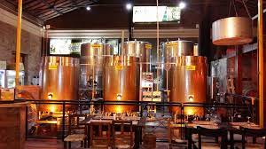
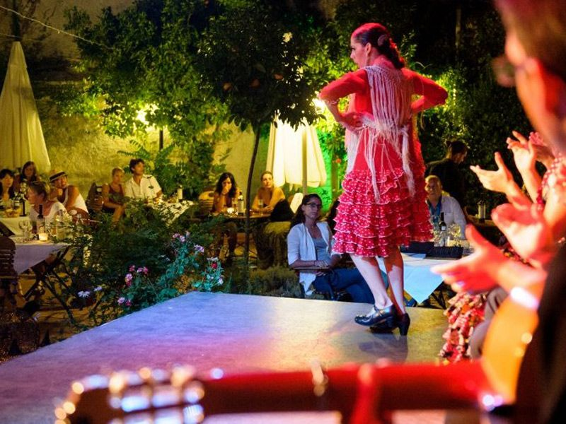
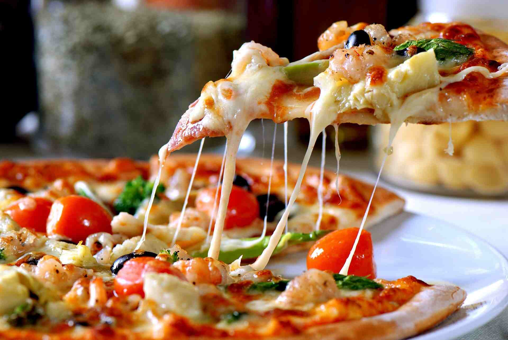
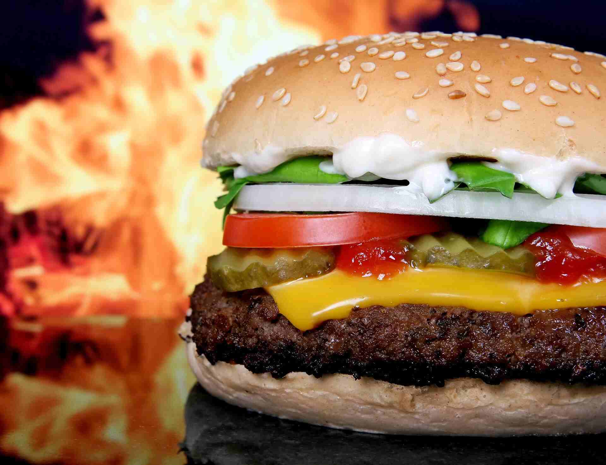
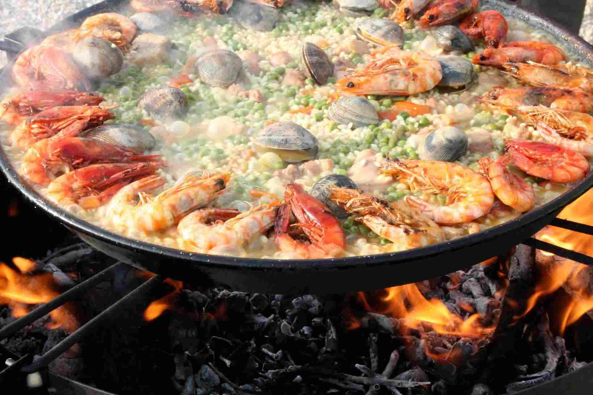
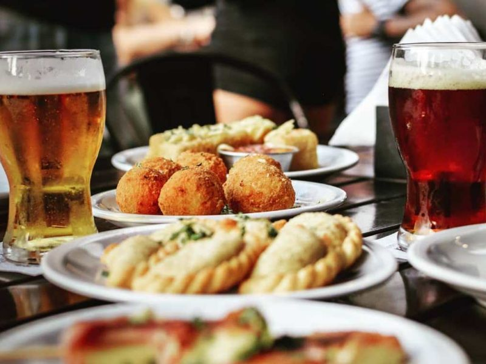

Casa Barceló Bistró
Una antigua bodega de Cervezas Artesanales reformada en la que se han conservado sus características paredes de piedra añadiéndole un toque bohemio y chic para convertirla en un lugar único. Se distingue por la calidad de su cocina, su sentido del servicio y del detalle, para brindarles un auténtico momento de emoción y placer, disfrutando de una carta que rinde homenaje a la cocina mediterranea a través de los sabores, las texturas y los olores.
Especialidades de la Casa
La Bodega
Nuestras Cervezas
Tablao Flamenco
Grill

Pizza de la Casa
Hamburguezas
Paella
Variedad en Tapas
Desserts

Eventos Ecepcionales, Celebraciones & Souvenirs
Disfruta las Experiencias
Celebramos eventos culturales, gastronómicos, deportivos, exposiciones y fechas especiales con cenas gastronómicas grandiosas. Presentamos música en vivo y baile flamenco, has tus reservaciones online para nuestros eventos Reservaciones o llama al 00123456789
Casa Barceló Arte y Fe
En nuestra tienda, encontrarás souvenirs, recuerdos y cajas de regalos personalizados para tus celebraciones. Detalles para bendecir, dar y compartir @casabarceloarteyfe Encarga todo lo que necesites para celebrar esa fecha especial, nos aseguramos de que lo recibas a tu entera satisfacción.
Servicio de Coffe Bar
Abre desde la hora del desayuno, con variedad de cafés y panadería
Servicio de Delivery
Con la App puedes seleccionar en el menu y realizar tu pedido vía online. Entrega rápida o recoge en Restaurante
Wifi y Pantalla Gigante
Mantente siempre conectado, disfruta los partidos de tu equipo favorito.